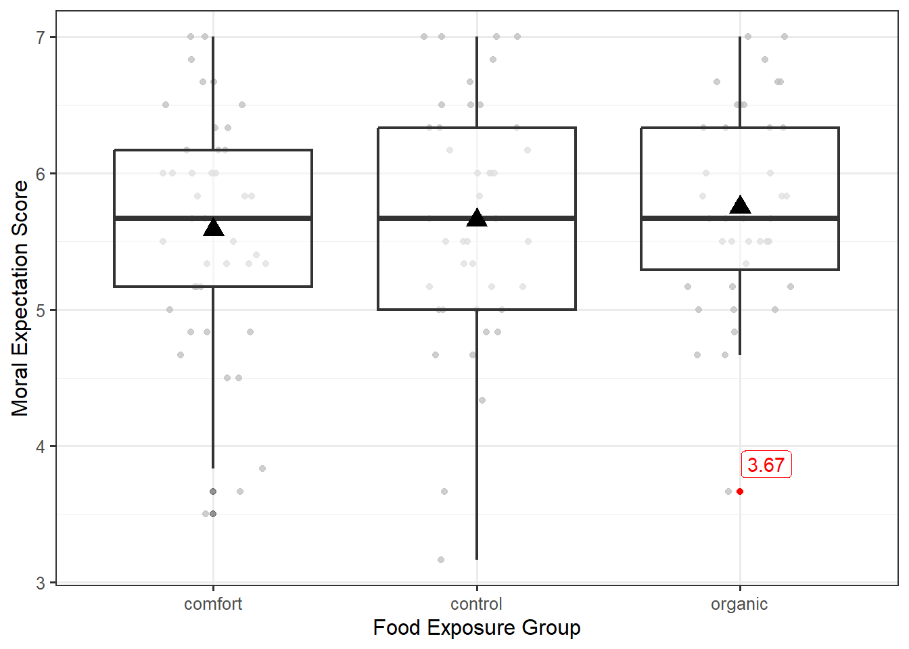

27 Building the Statistical Model
In Chapter 10, we introduced the statistical modeling framework. In particular, our general model (see Equation 10.1) for the data generating process was
\[\text{Response} = \text{function}(\text{predictor variables, parameters}) + \text{noise}.\]
Recall that this model has two components:
- A deterministic component which takes the form of a function of variables and unknown parameters. It is often this component on which we would like to make inference.
- A stochastic component which captures the unexplained variability in the data generating process.
In the previous units we made use of this model for making inference on a single mean response and then extended the model so that the mean response of a quantitative variable could depend on a quantitative predictor through a linear function. In this chapter, we discuss how to choose a function for the deterministic portion of the model so that we can compare the mean response of a quantitative variable across the levels of a factor (categorical predictor).
Note
For those that felt comfortable with Chapter 21, you may notice that much of what we discuss is a special case of the concepts discussed for the general linear regression model. However, we have tried to make this unit stand alone; that is, Chapter 21 (indeed, none of Unit III) is required prior to reading the material discussed in Unit IV, though we may occasionally make references to Unit III to draw connections between the material.
27.1 Statistical Model for A Quantitative Response and a Categorical Predictor
For the Organic Food Case Study, we are comparing the moral expectations (quantitative response) for different food exposures (levels of a categorical variable). Our model for the data generating process is best understood in light of the graphic we used to display the data (see Figure 27.1).
Let’s consider how the value 3.67, highlighted red in Figure 27.1, was generated. As we mentioned in the previous chapter, there are two sources of variability that contribute to the moral expectation scores (two reasons that the values are not all the same). One reason the moral expectations differ across participants is the fact that some participants were exposed to different food groups. That is, one reason the value 3.67 differs from others observed is because this subject belongs to the organic group and not the comfort or control groups. In order to incorporate the food type into the model for the data generating process, we might initially consider something like the simple linear model (Equation 17.3) discussed in Chapter 17:
\[(\text{Moral Expectation Score})_i = \beta_0 + \beta_1 (\text{Food Exposure Group})_i + \varepsilon_i.\]
However, the food exposure group is not a quantitative variable. That is, we cannot multiply \(\beta_1\) (a number) and “comfort” (a word) together as the model suggests. Our solution is to consider the deterministic portion of the data generating process to be a piecewise function:
\[ \text{function}\left((\text{Food Exposure Group})_i, \text{parameters}\right) = \begin{cases} \mu_1 & \text{if i-th participant exposed to comfort foods} \\ \mu_2 & \text{if i-th participant exposed to control foods} \\ \mu_3 & \text{if i-th participant exposed to organic foods.} \end{cases} \]
This is a completely acceptable function; it involves both the parameters, the mean response \(\mu_1, \mu_2, \mu_3\) for each of the three groups, and the factor of interest (which good group participants are exposed to). However, this function is cumbersome to write, and it is not necessarily easy to communicate to the computer or generalize to more complex settings. In order to create something that is a bit easier to work with, observe how the function works: it receives an input regarding which group a participant belongs to, and it directs you to the appropriate parameter to represent the mean response for their group (the output of the function). We can recreate this through a clever use of indicator variables (Definition 21.1).
27.2 Indicator Variable
An indicator variable is a binary (takes the value 0 or 1) variable used to represent whether an observation belongs to a specific group defined by a categorical variable.
Consider defining the following indicator variables:
\[ \begin{aligned} (\text{Comfort})_i &= \begin{cases} 1 & \text{if i-th participant exposed to comfort foods} \\ 0 & \text{otherwise} \end{cases} \\ (\text{Control})_i &= \begin{cases} 1 & \text{if i-th participant exposed to control foods} \\ 0 & \text{otherwise} \end{cases} \\ (\text{Organic})_i &= \begin{cases} 1 & \text{if i-th participant exposed to organic foods} \\ 0 & \text{otherwise}. \end{cases} \end{aligned} \]
Each of these indicator variables acts as a light switch, clicking “on” (taking the value 1) when a participant belongs to the corresponding group, and turning “off” (taking the value 0) when they do not. Further, because of how the categorical variable is defined, each participant must belong to exactly one group; therefore, exactly one light switch is turned on for each participant. These indicator variables allow us to capture the piecewise nature of the above function:
\[ (\text{Moral Expectations})_i = \mu_1 (\text{Comfort})_i + \mu_2 (\text{Control})_i + \mu_3 (\text{Organic})_i + \varepsilon_i. \tag{27.1}\]
Note
In Chapter 21, a single indicator variable was used to capture two groups; this was possible because the model for the data generating process included an intercept term — a parameter not associated with any predictor variable. In this chapter, there is no intercept term.
Consider the group of individuals exposed to comfort foods; for this group, the “comfort” indicator variable takes the value 1, and the “control” and “organic” indicator variables take the value 0. Therefore, the model suggests the average moral expectations for individuals exposed to comfort foods is
\[\mu_1 (1) + \mu_2 (0) + \mu_3 (0) = \mu_1.\]
Notice that the deterministic portion of our model for the data generating process is specifying the mean response, continuing what we have seen in previous units.
Big Idea
The deterministic component of a statistical model for the data generating process incorporates the parameters which govern the question of interest. It is built to explain differences in the mean response of the units of observation.
The deterministic portion of Equation 27.1 says that every single person exposed to the same food group should have the same moral expectations, and the stochastic portion of Equation 27.1 allows individuals within the same group to vary because of random noise.
Big Idea
The stochastic component of a statistical model for the data generating process captures the unexplained variability due to natural variability in the population or measurement error in the response.
Because this model is very directly partitioning the variability in the response (into the portion explained by the factor of interest and the portion unexplained by the factor of interest), it is often called an ANOVA (ANalysis Of VAriance) model.
ANOVA Model
For a quantitative response and a single categorical predictor (also known as a factor) with \(k\) levels, the ANOVA model is
\[(\text{Response})_i = \sum_{j = 1}^{k} \mu_j (\text{Group } j)_i + \varepsilon_i \tag{27.2}\]
where
\[(\text{Group } j)_i = \begin{cases} 1 & \text{i-th unit belongs to group } j \\ 0 & \text{otherwise} \end{cases}\]
is an indicator variable capturing whether a unit belongs to the \(j\)-th group and \(\mu_1, \mu_2, \dotsc, \mu_k\) are the parameters governing the model for the data generating process.
This is somewhat of a silly name since we have seen that all statistical models partition the variability in the response, and the above model is simply a special case of the general linear regression model. But, the name has stuck.
(Optional) Comparison of ANOVA to General Linear Regression Model
Notice that Equation 27.2 has a very similar form to Equation 21.3. The primary difference is the presence of an intercept term in Equation 21.3. Each indicator is acting as a predictor in the model for the data generating process. If we were to add an intercept to Equation 27.2, and then remove one of the indicator variables to construct a reference group, then we would completely fall under the general linear regression model framework. This means that as we move forward, we can adopt results established for the general linear regression model.
As each parameter in Equation 27.1 represents the mean response of a particular food exposure group, it is intuitive that we would estimate the parameter with the observed sample mean of the corresponding food exposure group. This turns out to be equivalent to estimating the parameters through the method of least squares (Definition 17.2).
Note
The least squares estimate of \(\mu_j\) in Equation 27.2 is the sample mean response from the \(j\)-th group. That is, we use the observed mean response from each group as an estimate of the mean response for each group.
Just as before, while point estimates are helpful, inference requires that we quantify the variability in our estimates. And, just as before, we need to distinguish between the model for the data generating process and the model for the sampling distribution of the parameter estimates and the model for the null distribution of a standardized statistic. And, just as before, to move from the model for the data generating process to a model for the sampling distribution of the parameter estimates, we impose conditions on the stochastic component.